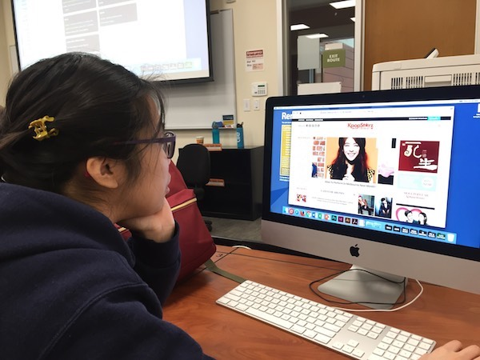

Setting
I paired up with one of our classmates and found 3 similar K-Pop website to share with her.
I wrote down the main 3 things to be accomplished by letting her test out the websites.
I would like to know wheather or not users prefer a lot of information or minimal info on a website.
I would love to know what colors users prefer.
Sequence
I believe the most of my website users would visit my website to get new information regarding Korean pop stars
and Korean entertainment. I say the age range of users will be 10-30. Since everyone alreadys knows material design
of news interface, I would just follow those trends to eliminate a possibility of users getting confused.
I draw a usability test chart after observing the classmate. It seems like she goes to top navigation to search and
get used to the website.
Satisfaction
I will upload a lot of videos and news to make my website tempting.
People would easily get inforamtion by clicking or searching any info regarding their interest.
I have to download a lot of Korean pop star videos and upload on the webiste.